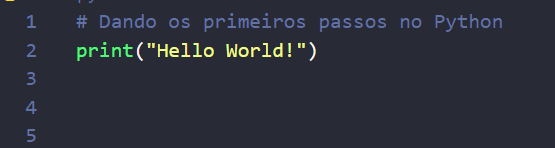
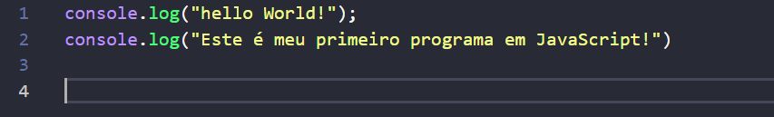
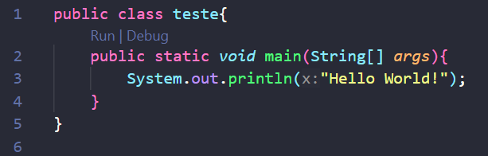

Como instalar o Python ?
Como instalar o Java ?
Como instalar Visual Studio Code ?
Como instalar o IntelliJ IDEA ?
Como colocar na tela o Hello World no Python ?
Como colocar na tela o Hello World no JavaScript ?
Como colocar na tela o Hello world em Java ?
